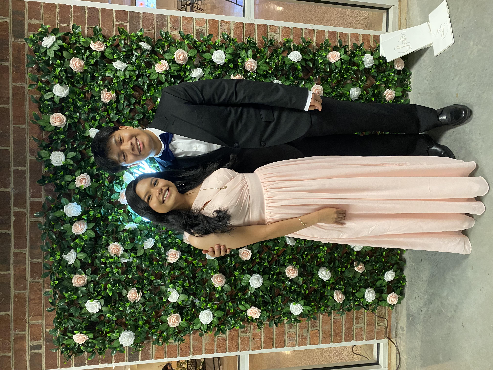

I'm a sophomore at the University of North Carolina at Chapel Hill majoring in Data Science and Information Systems. I am really exited to be part of the Mi Pueblo organization that
promotes the Latinx community within UNC! I am also a Co-founder and Treasurer of Edge Carolina, an organization that
aims to connect all backgrounds of Carolina to create innovative ideas and projects.
This course is a broad, high-level survey of the major aspects of data science including ethics, best practices in communication (e.g. data visualization), mathematical/statistical concepts, and computational thinking. Students will gain an understanding of the fundamentals of data science to support more in-depth, advanced coursework that are requirements for the data science majors. (From the Courses of Study)
Covers the basic mathematical skills needed for learning calculus. Topics are calculating and working with functions and data, introduction to trigonometry, parametric equations, and the conic sections. (From the UNC Catalog)
In an era of rapid advancements in data science and AI, ethical concerns related to data-intensive technologies are now of utmost importance. This course immerses students in data science ethics, facilitating a comprehensive exploration of the intricate interplay between data and societal values. By nurturing critical thinking grounded in ethical theories, this course provides students with a strong foundation in designing and analyzing data-intensive ecosystems that emphasize values such as fairness, accountability, ethics, and transparency. (From the Courses of Study)
Review of basic inference; two-sample comparisons; correlation; introduction to matrices; simple and multiple regression (including significance tests, diagnostics, variable selection); analysis of variance; use of statistical software. (From the UNC Catalog)
I have so many interests I could make an entire site dedicated to them! However, my top interests are cars and food! I love to drive around in my car and go car spotting! I especially love to do it with my girlfriend Selena, even if she doesn't care for cars much. Her and I always while driving try to find new food spots! We are trying to make a massive list to have that rates food spots out of ten.
